IT Support
Focused on user-first troubleshooting, ticket-style triage, clear status updates, escalation thinking, and practical support documentation.
Recent B.A. Honours Information Technology Graduate
I'm Matthew Pizzitola, a recent York University B.A. Honours Information Technology graduate based in Vaughan, Ontario, focused on entry-level Help Desk, IT Support, and junior systems/network roles. I bring together 3+ years of high-volume customer service experience with hands-on projects involving Windows configuration, local service setup, firewall rules, backups, networking fundamentals, service desk workflows, SQL/MySQL, front-end development, and technical documentation.
My strongest work comes from turning messy requests into clear next steps: understanding the issue, prioritizing what matters, documenting what happened, communicating updates clearly, and escalating when needed. This portfolio highlights the projects that best show how I approach troubleshooting, support workflows, network planning, database reporting, system architecture, and practical IT learning.
Seeking an entry-level Help Desk / IT Support role where I can troubleshoot user issues, document resolutions, support Windows 10/11 and Microsoft 365 environments, contribute to a knowledge base, and grow into stronger systems/network support work.
Built support, systems, networking, web, database, and architecture projects that demonstrate troubleshooting, documentation, workflow design, data reporting, and technical implementation.
Handled 15-25+ customer and operational requests per shift in a fast-paced environment, building strong habits in prioritization, clear communication, follow-through, and escalation under pressure.
Managed 10-20 active requests per week through scheduling, correspondence, document handling, structured follow-ups, and clear stakeholder updates.
Continuing to build practical skills through certifications, hands-on labs, portfolio projects, systems practice, documentation, and support-focused technical learning.
Completed a Bachelor of Arts, Honours degree in Information Technology with coursework across networks, database systems, systems analysis and design, requirements management, web technologies, and IT risk management.
Graduated with honours and built the academic foundation that led into my Information Technology studies at York University.
The main areas I'm developing through projects, coursework, and hands-on practice.
Focused on user-first troubleshooting, ticket-style triage, clear status updates, escalation thinking, and practical support documentation.
Building hands-on confidence with Windows 10/11, TCP/IP, subnetting, DHCP/DNS, VLAN/NAT concepts, firewall baselines, backups, and local services.
Using HTML, CSS, JavaScript, REST/JSON, SQL/MySQL, Excel reporting, and structured documentation to turn technical requirements into working project outcomes.
A growing collection of support, systems, networking, web, database, and architecture projects.

Help desk ticketing prototype focused on triage, escalation, status tracking, and support workflow clarity.
A help desk / service desk workflow prototype designed to make ticket intake, priority assignment, escalation, and lifecycle visibility easier for support teams. The project models support flows across desktop and mobile contexts, including ticket creation, queue views, messaging, calendar actions, and KB/FAQ templates.
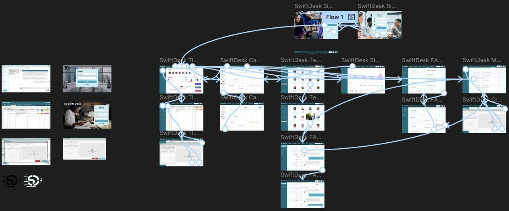
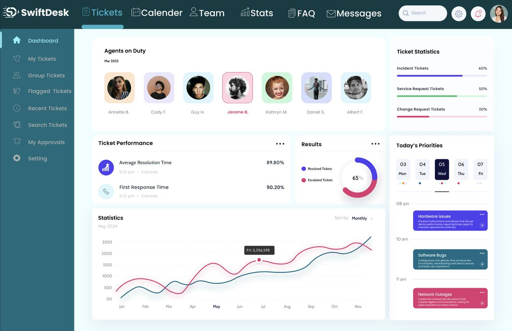
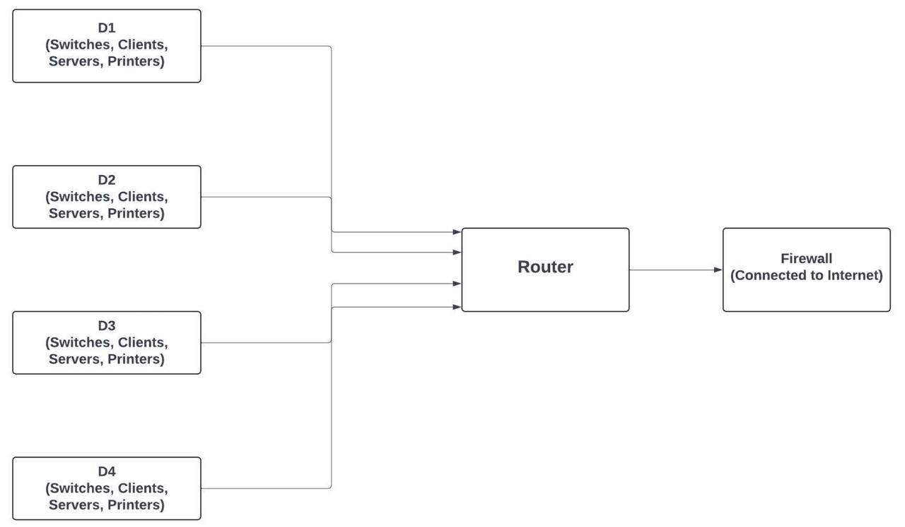
Small enterprise LAN design with subnetting, VLAN/IP standards, NAT assumptions, and SD-WAN vendor evaluation.
Designed a 4-department LAN using access/distribution/core thinking, /26 subnetting for 62 hosts per subnet, VLAN/IP standards, NAT, and deny-by-default segmentation assumptions. The project also included a bill of materials, cost estimate, documented assumptions, and a Cisco SD-WAN vs VeloCloud evaluation against availability, latency, and scalability needs.

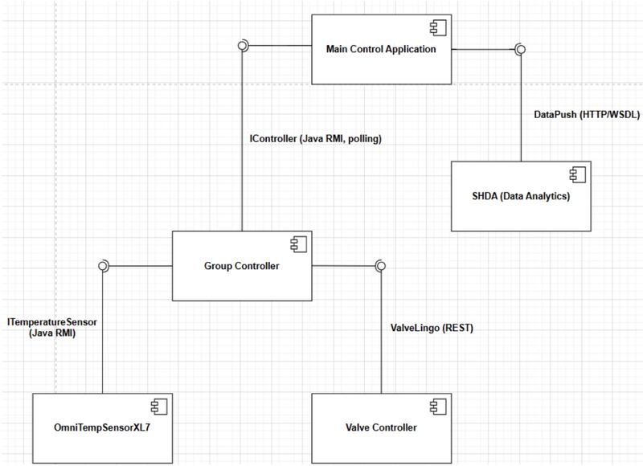
IoT monitoring/control architecture with UML diagrams, availability analysis, and escalation runbook planning.
Analyzed a smart-building monitoring/control architecture for 20 tanks arranged in a 5x4 structure. The project documented the system with UML component, deployment, and sequence diagrams, calculated MTBF/MTTR from a 2024 incident log, estimated approximately 99.91% availability, and proposed heartbeat monitoring, ping checks, pub/sub alerting, and an L1 to L2 escalation runbook.

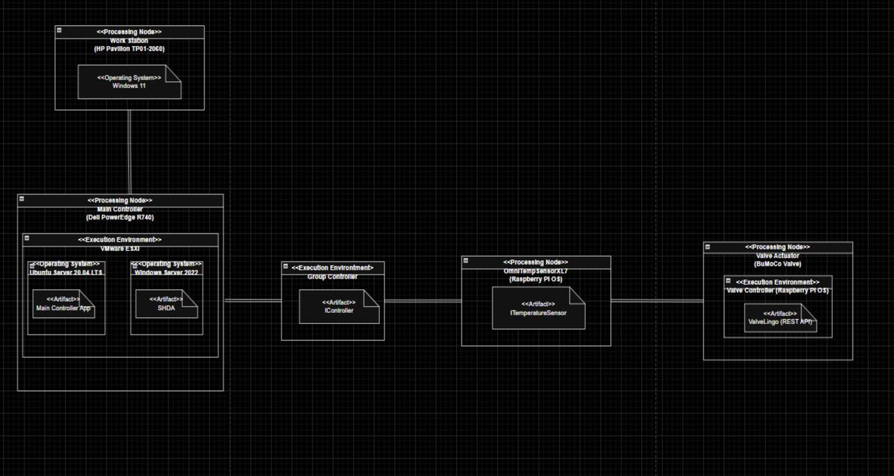
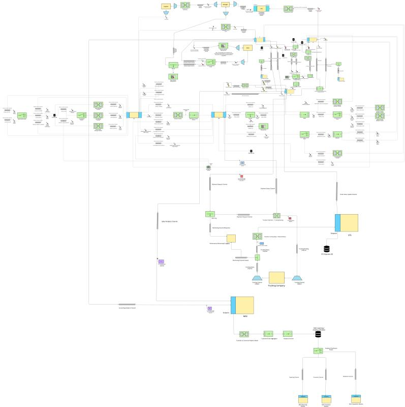
Messaging-based integration architecture using Enterprise Integration Patterns for retail platform workflows.
Designed a messaging-based integration architecture for DECORATHON's retail platform using Enterprise Integration Patterns. My segment focused on System Group i, covering IGP, ORS, and SPS workflows such as sign-in/sign-up, profile updates, catalogue browsing, order submission, and status queries. The architecture uses endpoints, point-to-point channels, translators, a canonical data model, content enrichment, wire taps, splitters, routing, and aggregation.

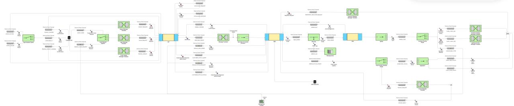
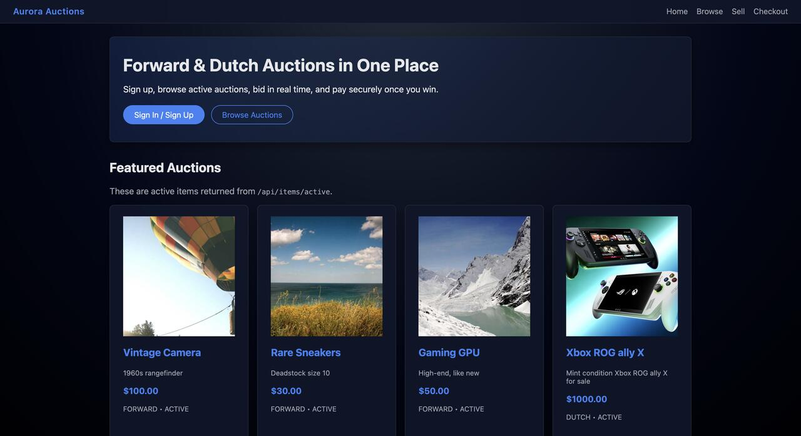
Multi-page front-end auction platform with Dutch and forward auction flows, browse views, checkout, and receipt flow.
Built a multi-page front-end auction experience supporting Dutch and forward auction flows. The project includes multiple browse views, auction detail pages, live countdown behavior, checkout to payment to receipt flow, REST/JSON helper functions, sessionStorage persistence for expedited shipping choices, auction closeout behavior, and a timezone parsing fix for live timers.
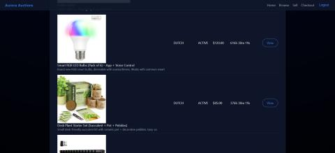
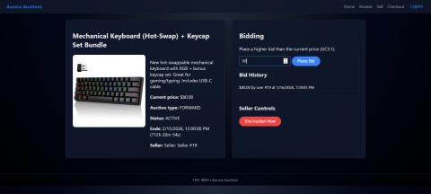
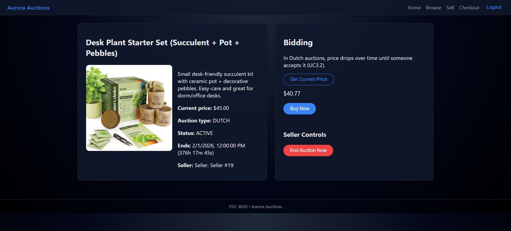
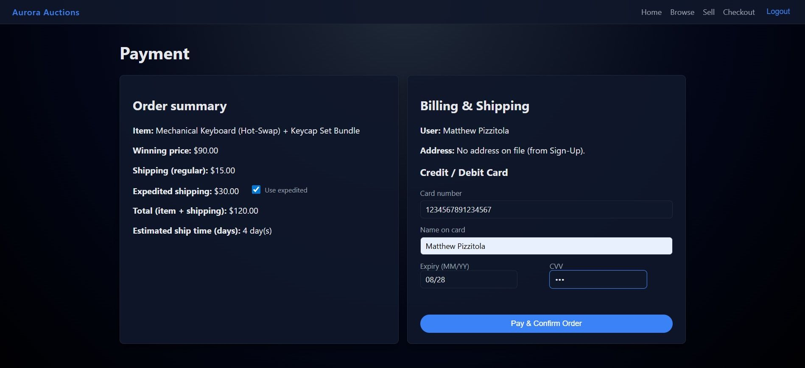
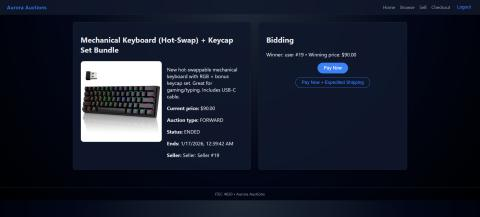
Relational invoice database with SQL schema design, PK/FK constraints, joins, aggregations, and reporting outputs.
Designed and queried a relational invoice database with Customer, Invoice, Line, and Product tables. The project used primary and foreign key constraints, typed fields, representative data loading, and reporting queries with joins and aggregations to produce invoice totals, customer spend summaries, and product rollups.
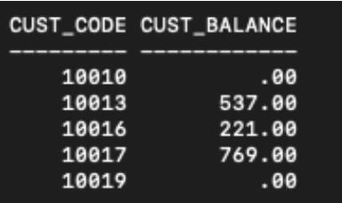
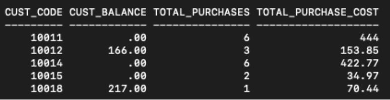

Vanilla JavaScript slots mini-game module with balance updates, bonus mechanics, sound settings, and manual QA.
Owned development and testing for a casino-style slots mini-game module integrated into a team web app. Built Diablo's Fortune in vanilla JavaScript with a 3x3 grid, 8 symbols, 8 win-lines, adjustable bet and multiplier settings, real-time balance/stat updates, sound controls, and a Hell's Seventh Chance bonus mechanic after 5 losses. Also performed manual QA, documented defects, and validated gameplay logic across payout and edge-case scenarios.
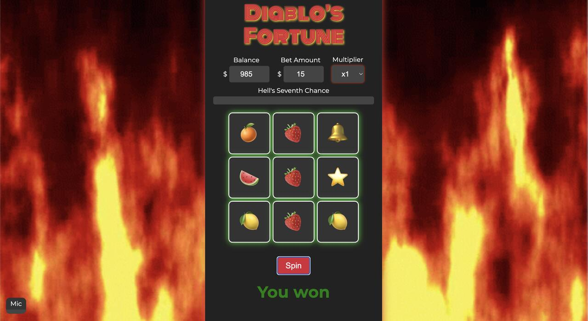
No projects match your search.
A space for sharing recent projects, current work, build notes, technical progress, and the lessons I’m learning along the way.
No journal entries match your search.
Copyright © 2026 Matthew Pizzitola. All rights reserved.